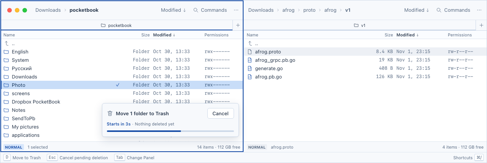
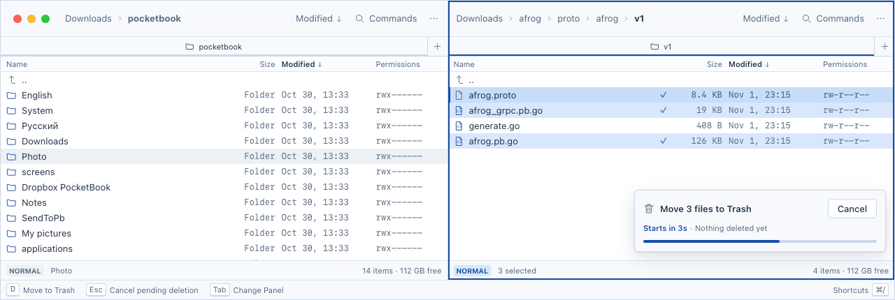

Вариант A — карточка внутри исходной панели
До конца отсчёта файлы остаются на месте. Карточка сохраняет привязку к источнику при переключении фокуса.


Открыть интерактивный прототип · D запускает отсчёт · Cancel / Esc отменяет действие